1 Preprocessing
Check out the user manual for more details about this module’s features.
Merge
Metabolomic data from a real-world experiment comparing diabetic to non-diabetic samples will be loaded and preprocessed for analysis.
Load the data
Prepare the data
Use the preprocess >> merge module to format the data set and merge with the variable meta data. Select the blue question mark icon at the bottom right to get detailed instructions.
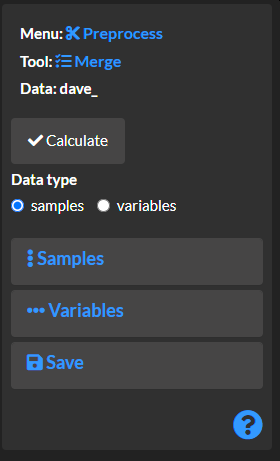
Add non-numeric variables to the row meta data.
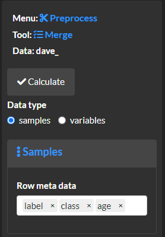
Merge the data index with meta data describing the numeric variables (e.g. KEGG and CID identifiers).
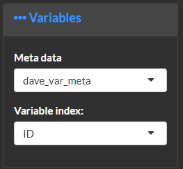
Select calculate and overview the results.
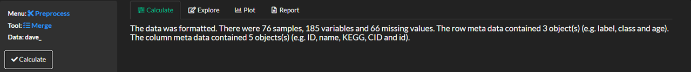
Explore and plot
View the dimensions for the created data assets.
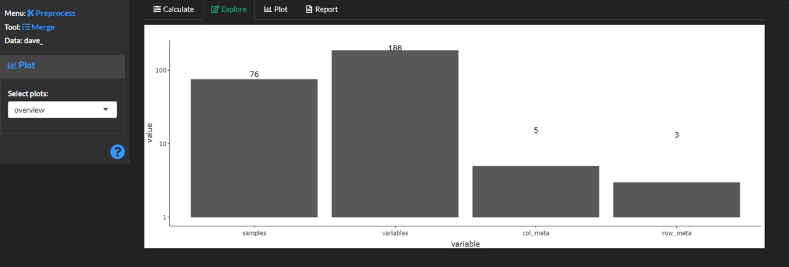
Overview missing values for each sample (row) and variable. Connected lines show missing values for the same sample for multiple variables.
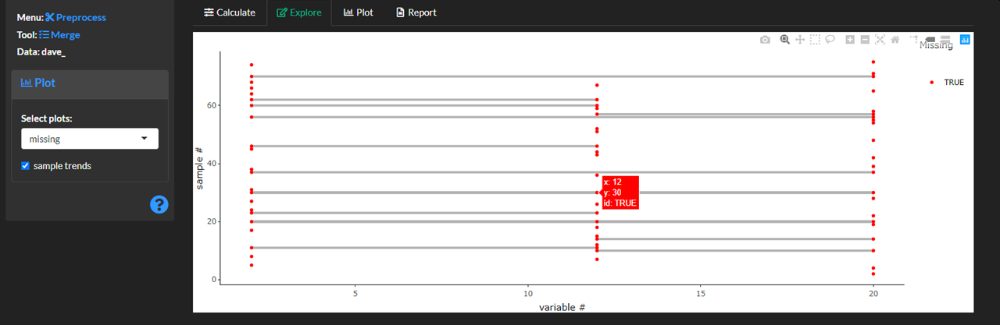
Report
Create a report capturing the methods results and figures.
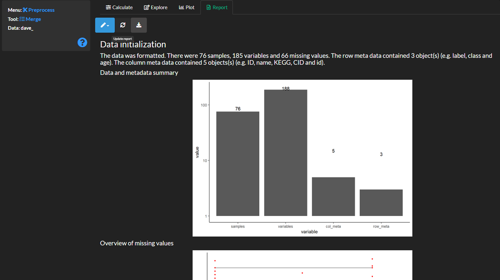
Save the results for later analyses.
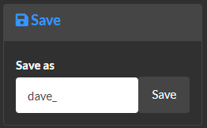
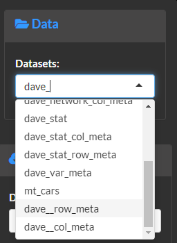
From here on every module’s analysis will follow the same basic workflow.
Missing
Methods
Next remove and/or impute missing values. Use the preprocess >> missing module to remove and/or impute missing values. Note this is an important step to make sure down stream analyses are compatible.
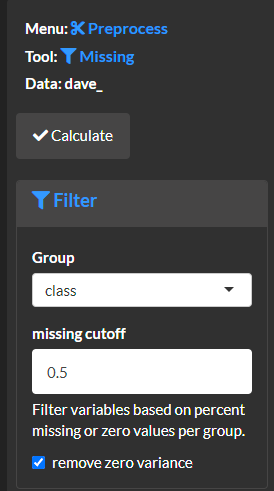
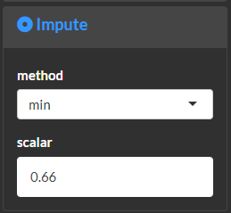
Select calculate and overview the results.
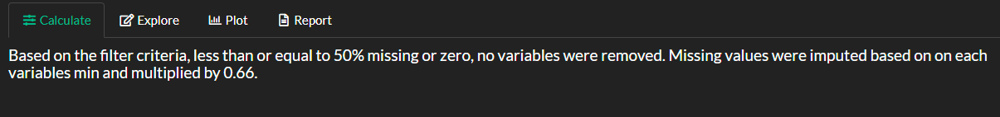
Explore and plot
Review missing values for each row and any removed variables based on the missingness filter.
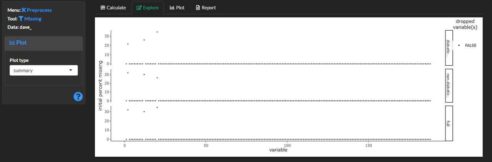
Review any remaining missing values in the data.
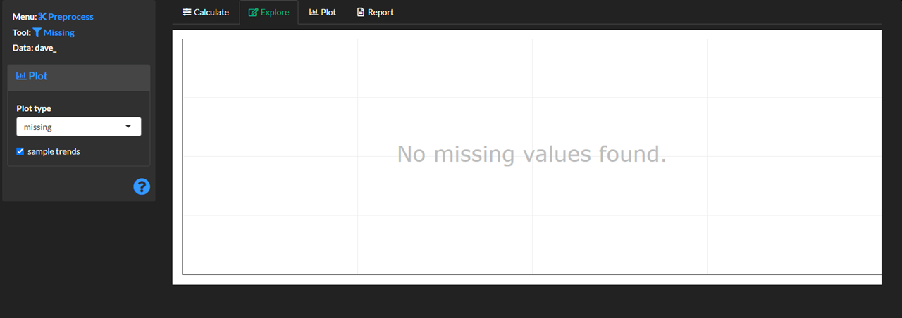